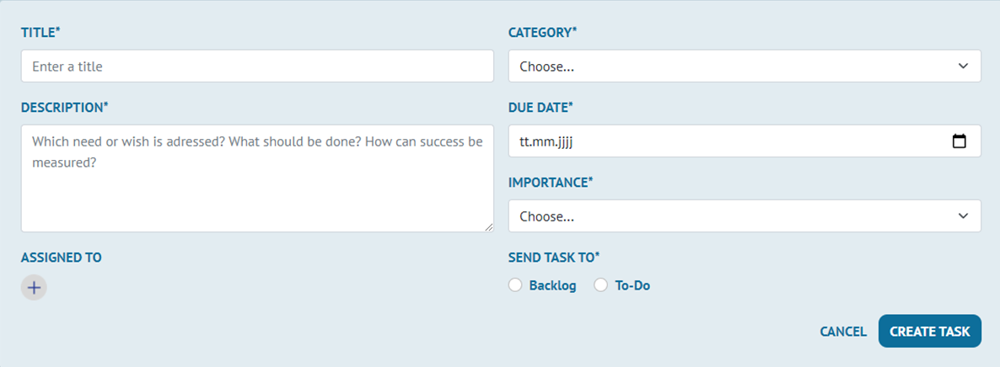
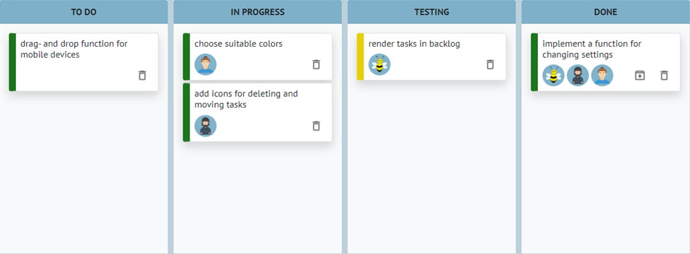
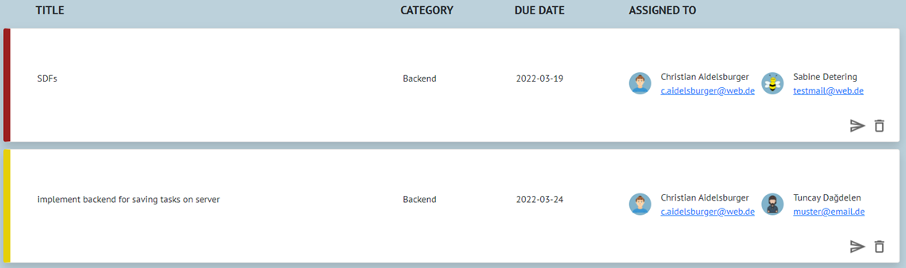
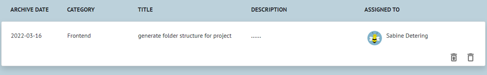
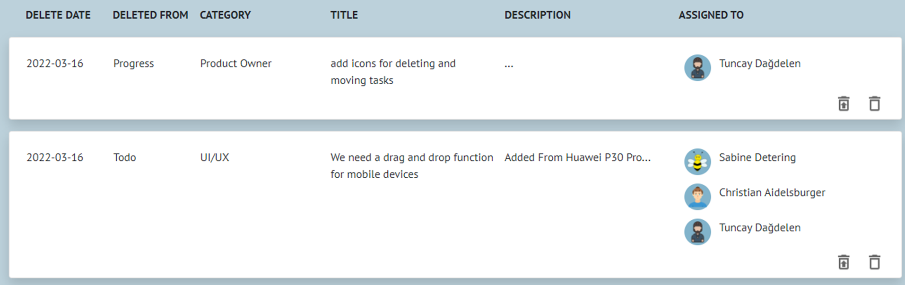
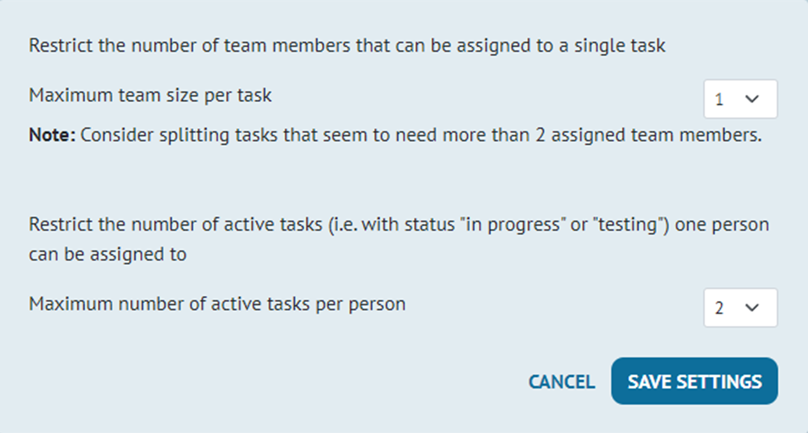

Help
Join is a Kanban board. It gives you an overview of your current work situation and helps visualising the
project flow in agile project management.
This app was built as a training project at Developer Akademie. There is no security layer implemented. The app is not supposed to be used with real life data. Do not enter personal data.
Add a task
- Create new tasks in the add-task section.
- Fill the form and choose by whom the task should be processed.
- You can create new categories for your individual purpose.
- Decide whether the task should end up in the board for direct processing or in the backlog first.

The board
- On the board each task passes through 4 stages.
- The tasks can simply be moved by drag and drop.
- After a task has been completed, it can either be archived or deleted.
- The color of the left border of each task illustrates its importance level.
- By clicking on the task you can see and edit all details.

The backlog
- The backlog is a collection of upcoming tasks and ideas that are not yet in the focus of the project team.
- You can edit the task by clicking on it.
- To move the task to the board click on the arrow icon.

The archive
- The archive stores all tasks that have already been completed.
- It can be used to figure out who has completed which task.
- By clicking on the restore icon the task is moved back to the "DONE" section on the board.
- Deleting a task from the archive cannot be undone.

The trash
- All tasks that are deleted end up in the recycle bin.
- It prevents tasks from being deleted accidentally.
- Tasks that were deleted from the board can be restored to the "TODO" section of the board. Tasks that were deleted from the backlog will be restored there.
- Deleting from the recycle bin cannot be undone.

The Settings
- Each task can be assigned to a limited number of team members.
- We recommend to restrict this number to 1 or 2, in order to facilitate a clear structure of tasks and responsibilities. Consider splitting tasks that seem to require more contributors.
- Each team member can only work on a limited number of tasks simultaneously. Therefore, the number of tasks a team member can be assigned to in stages "IN PROGRESS" or "TESTING" is restricted.
- Choose between 1, 2 or 3 active tasks allowed per team member.
